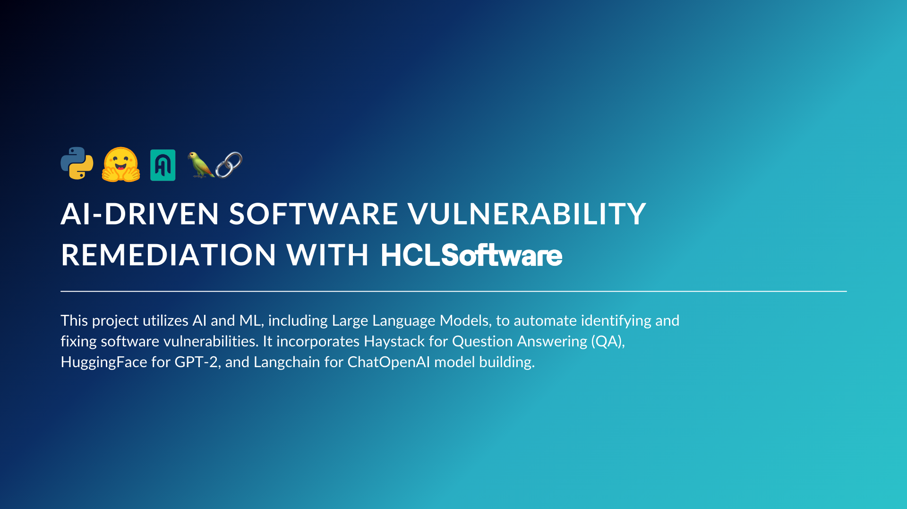

AI-Driven Software Vulnerability Remediation with HCLSoftware

Title
AI-Driven Software Vulnerability Remediation
Description
- Project Duration: 01/2024 – 05/2024
- Project Type: Research & Applied AI in Secure Code Automation
- Team: Rakshit Vasava, Garvita Jain, Justin Tai, Prathamesh Awati
- My Role: Lead Researcher & Model Developer
- Contribution: 100%
- Deliverables: Final PowerPoint presentation delivered to HCLSoftware stakeholders
🧩 PROJECT SUMMARY
This project focused on using Large Language Models (LLMs) to generate precise, context-specific remediation guidance for software vulnerabilities identified by HCL AppScan. The goal was to move beyond static code examples by leveraging AI to produce dynamic, accurate, and developer-friendly fixes. We explored how different LLMs could be fine-tuned on security datasets to improve the relevance and clarity of remediation output.
📊 METHODOLOGY
We combined internal vulnerability data from HCL Software with best practices from the OWASP Cheat Sheet API to train and evaluate three model types:
QA (Haystack)- Designed for information retrieval using retriever-reader architecture
GPT2 (HuggingFace)- Fine-tuned for generative remediation text and code snippets
ChatOpenAI (Langchain)- Integrated with Chroma for retrieval-augmented generation
Each model was tested using structured input-output workflows, comparing their ability to provide useful, code-focused recommendations for real-world vulnerabilities.
💻 TOOLS
Pythontransformers- Fine-tuning GPT2
langchain- Integrating OpenAI
haystack- QA pipeline (DocumentStore, Retriever, Reader)
PowerPoint: Final stakeholder presentation with model comparison and recommendations
🔍 KEY INSIGHTS & FINDINGS
As we worked through model training and evaluation, several insights emerged:
- Models performed best when trained on structured QA or input-output data pairs.
- Computational constraints highlighted the need for more efficient fine-tuning approaches.
🚀 OUTCOMES & DELIVERABLES
By the end of the project, we had built and evaluated three distinct LLM-based solutions for code remediation. These systems were capable of generating recommendations based on different types of software vulnerabilities with varying levels of accuracy and relevance.
- Deliverables:
- A working prototype of a smart remediation suggestion engine
- Comparative report across three model architectures (
QA,GPT2,ChatOpenAI)
- Recommendations for scalable fine-tuning: Adapters, DAPT, and DPO
- Impact:
- Demonstrated feasibility of AI-assisted secure coding workflows
- Laid the foundation for integration into development environments (IDEs)
The order of content may appear differently on mobile devices. For optimal viewing, I recommend using a desktop. (Order: right → left)